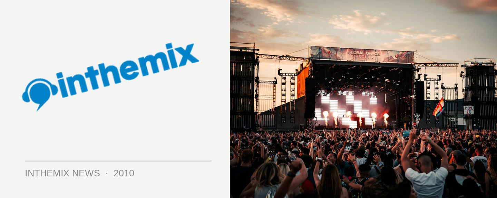

Australia's first Tiesto 'Kaleidoscope' photos!
Dutch dance heavyweight Tiesto returned to Australia over the weekend to launch his ‘Kaleidoscope’ tour in Sydney and Brisbane, the first shows that are part of a run that will see him playing a whopping nine shows across the country. Were you there, or are you keen for a taste of what’s to come on the remaining dates? Check out the photos now on ITM!
> Tiesto ‘Kaleidsocope’ tour, Sydney Jan 29th
> Tiesto ‘Kaleidsocope’ tour, Sydney Jan 30th
> Tiesto ‘Kaleidsocope’ tour, Brisbane Jan 31st
Visually, it’s a show that’s even more impressive that the ‘Elements of Life’ tour we saw in Australia a few years ago, featuring massive visual screens, lights, lasers and plenty more. If you want to find out more, check out ITM’s REVIEW of the Sydney event, or have a listen to our AUDIO INTERVIEW with the big man himself!
Tiesto has another six massive shows to go in Melbourne and Perth. Stay tuned to ITM for all the essential coverage!